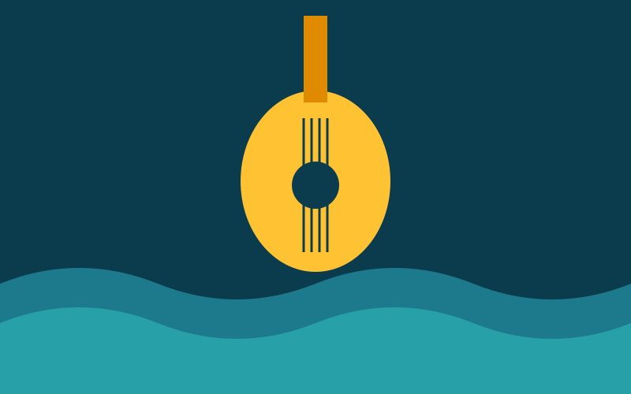

Timple y Marea

Grupo de música canaria que mezcla el sonido del timple y la guitarra con ritmos más modernos.
Cuándo y dónde
Sábado a las 21:30 h en el Escenario Plaza.
"Cuando el barranco canta, Tamaraceite baila"
Tamaraceite, Las Palmas de Gran Canaria - 18 y 19 de junio de 2027
Barranco Vivo es el festival de música y cultura que hacemos cada año en Tamaraceite. Durante todo el fin de semana habrá conciertos, talleres y actividades al aire libre para gente de todas las edades.
Lo que buscamos con este evento es:
Puedes ver más cosas sobre el barrio en la web del Ayuntamiento de Las Palmas de Gran Canaria o en Wikipedia.

Grupo de música canaria que mezcla el sonido del timple y la guitarra con ritmos más modernos.
Sábado a las 21:30 h en el Escenario Plaza.

Sesión de música electrónica mezclada con ritmos latinos y percusión en directo para cerrar la noche.
Sábado a las 23:00 h en el Escenario Plaza.
Taller abierto para aprender a tocar el tambor en grupo. Puede apuntarse cualquiera, no hace falta saber tocar.
Sábado a las 12:00 h en la Carpa Cultural.
| Hora | Actividad | Escenario o lugar | Duración |
|---|---|---|---|
| 10:30 | Apertura y mercadillo del barrio | Calle del Barranco | 90 min |
| 12:00 | Taller Tambor de Callejón | Carpa Cultural | 60 min |
| 13:30 | Pasacalles de timples | Plaza de Tamaraceite | 45 min |
| 17:00 | Juegos tradicionales canarios | Parque del barrio | 120 min |
| 19:00 | Cuentacuentos "Historias del barranco" | Carpa Cultural | 45 min |
| 21:30 | Concierto de Timple y Marea | Escenario Plaza | 75 min |
| 23:00 | Sesión de Colectivo Machango | Escenario Plaza | 90 min |
Rellena este formulario si quieres apuntarte a alguna actividad. Los campos con * son obligatorios.
En este formulario pedimos tu nombre, correo, teléfono y la actividad a la que te apuntas. Solo usaremos estos datos para organizar los grupos del festival y avisarte si hay algún cambio. No los compartimos con nadie y se borran cuando acabe el evento. Y en caso de apocalipsis de algún tipo nos quedamos con todas tus pertenencias.